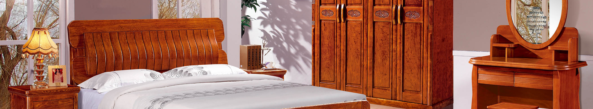

<include file="Public:header" />
<style>
.page-guestbook dl dd input{
width:auto;
vertical-align:middle;
}
</style>
<div class="nyban"></div>
<div class="main">
<div class="gao"></div>
<div id="page_main" class="clearfix">
  <div class="container">
    <div class="page-right">
      <div class="site-nav"><span>当前位置 : </span>
	  
		{$location}
	  
	  </div>
      <div class="page-news">
      <table border="0" align="center">
      <tr><th class="news-time">日期</th><th class="news-title">标题</th></tr>

		<volist name="list" id="li">
		<tr>
		<td class="time-list"><span>{$li['dateline']|date="y/m/d",###}</span></td><td><a href="{$li.url}" title="{$li.title}">{$li.title}</a></td>
		</tr>
		</volist>
		
			  </table>
		<div class="page_list">{$page}</div>
      </div>
    </div>
    
	 <include file="Public:left" />
    <br class="clear" />
 </div>

  </div>
 <include file="Public:footer" />   